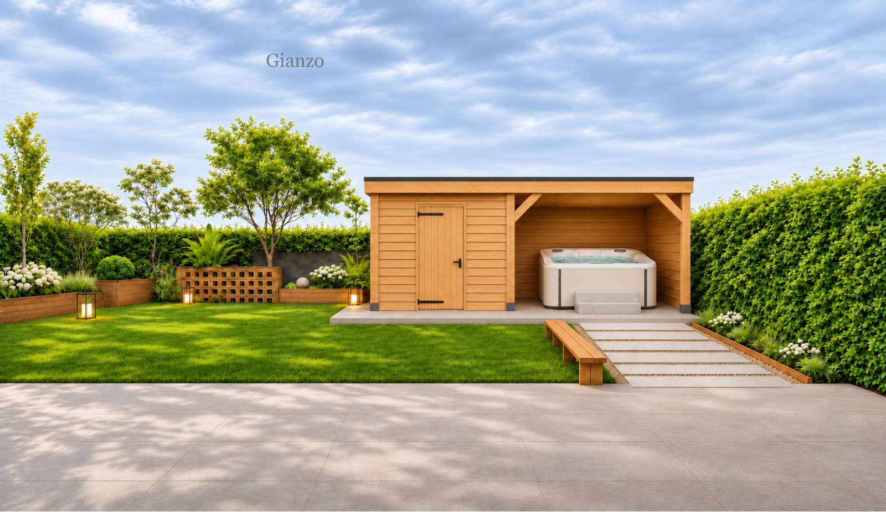
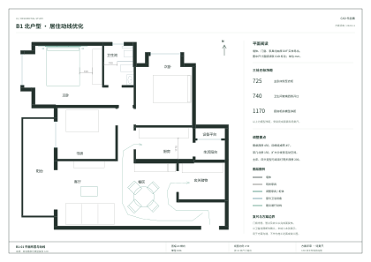

SELECTED WORKS
六套方案，看见不同的空间可能。
选择作品，查看图纸、彩平与效果。
DRAWING ROOM
方案评审版B1 北户型 · 居住动线

图纸暂未载入，请刷新或下载PDF查看。
A3横向 · 平面 1:50 · 尺寸单位 mm放大后拖动查看 · 双击复位
FROM VIEWING TO REVIEW
看得清，也拿得走。
六套毫米单位的可编辑DXF，配合A3图纸、彩平与效果参考。
在线放大审阅，或下载资料继续沟通和修改。
本展厅展示方案设计与局部改版。一居、两居为原创概念户型，非实测或已建项目。其他标注值来自原图、既有模型或暂定设计，待复尺项目以各图说明为准。图纸不能替代现场复核及施工深化，效果图用于表达空间与材质意向。